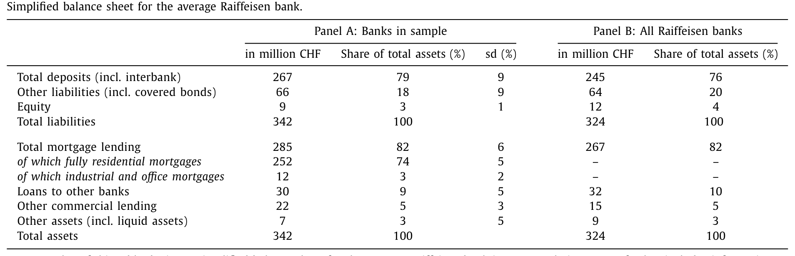
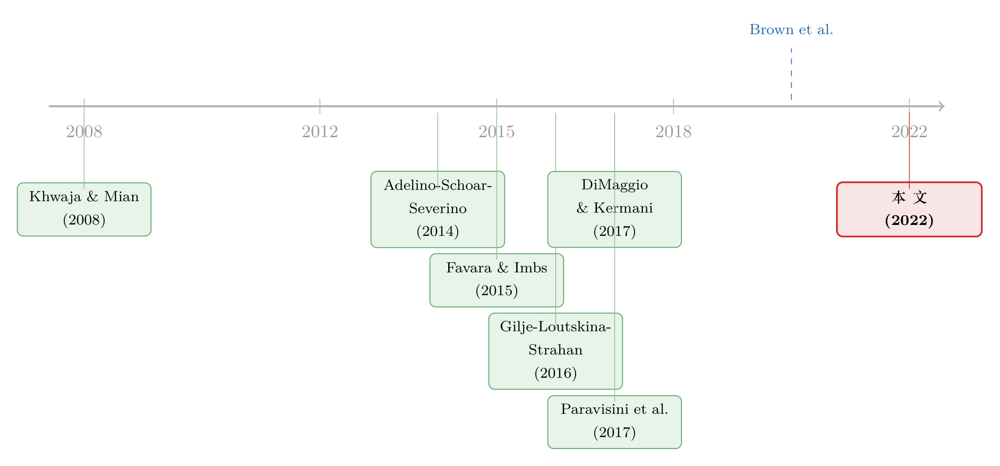

华尔街亏的钱，怎样变成了瑞士小镇上涨的房价
本文读的是 Blickle (2022, Journal of Financial Economics)：2008 年瑞士储户从卷入次贷风波的 UBS、瑞信「用脚投票」、把存款搬到了就近的地方合作银行（Raiffeisen），而这批小银行因为只会、也只能做本地按揭，于是把意外多出来的钱几乎全部投向了房贷——存款外生增长 1%，两年内本地按揭多增 1.2%；三年内，受冲击社区的房价比对照社区多涨了 25%。一个干净得近乎实验室的设定，给「信贷供给能不能自己推高房价」这桩老公案，递上了一份很难反驳的证词。
1 一桩悬而未决的公案
先抛一个看似简单、却争了十几年的问题：房价上涨，到底是钱（信贷）先动、还是需求先动？
这不是抠字眼。它背后是两套截然不同的世界观。一派以 Mian 和 Sufi 为代表，认为大衰退之前美国房价的疯涨，很大程度上是一场「信贷过剩」（credit glut）人为吹起来的——银行把钱借滥了，房价被钱抬了起来（Mian, Sufi & Verner, 2017）。另一派则反过来：是人们对房价的不合理预期先点了火，信贷不过是跟着房价上涨而被动扩张的结果，这一观点在 Adelino, Schoar & Severino (2014) 和 Foote, Loewenstein & Willen (2020) 中写得很清楚。
听上去像「先有鸡还是先有蛋」，但它在实证上格外棘手。因为现实里信贷的扩张几乎从不在真空中发生：监管放松、银行改了放贷规则、利率变了——这些事件本身就和市场景气深度纠缠，它们既影响信贷供给，也直接刺激购房需求。你看到「信贷涨、房价涨」一起发生，根本分不清谁推了谁。
这正是「内生性」的经典形态：你想给信贷供给找一个只动供给、不动需求的外生变化。在美国，DiMaggio & Kermani (2017) 用次贷规则的联邦变更、Favara & Imbs (2015) 用跨州分行管制的放松，分别做过这件事。但这些工具或多或少都带着「政策」的尾巴。
那么，有没有一个地方，信贷供给会因为一桩和本地房市毫无关系的意外而突然增加？
作者找到了。
2 一场「用脚投票」的存款大迁徙
故事发生在 2008 年的瑞士。
那一年，瑞士公众突然意识到，本国最大的银行 UBS 深陷美国次级抵押债券。尽管后来政府明确兜底，仍有一批储户对它失去了信任、或者干脆想「惩罚」它当年的冒险——结果是 UBS 在 2007 到 2010 年间流失了约 35% 的国内零售存款，瑞信（Credit Suisse）也走掉了约 20%。两家巨头合计被抽走了 600 亿瑞郎（1 瑞郎≈1 美元）的国内存款，且绝大多数发生在 2008 这一年。
关键在于：瑞士经济和瑞士房市当时并没有像美国那样崩盘。储户出逃，纯粹是因为这两家「全能银行」（universal banks）和美国次贷沾了边。钱并没有消失，它只是换了个家。
那么，钱搬去了哪里？这就要请出本文的主角——Raiffeisen 银行。
接着，一个自然的问题是：这批存款的流向，是随机的吗？如果它系统性地涌向了那些本来房市就要起飞的地方，那这场迁徙就和「需求先动」没有区别，故事讲不下去。但作者发现了一个极妙的规律：储户离开 UBS 后，倾向于选择离原网点最近的合意替代品。 道理很朴素——换银行麻烦，挑一家离旧网点近的，能最大限度保留原来的路线和习惯。于是，一家 Raiffeisen 银行能接到多少「逃难」来的存款，很大程度上取决于它离最近的 UBS / 瑞信网点有多远。
这就为整篇论文埋下了那枚最重要的钉子——距离。
（关于「存款往哪儿流、比哪家银行倒下更重要」这件事，可参见《存款往哪儿流，比哪家银行倒下更重要》。）
3 为什么偏偏是 Raiffeisen？——专业化才是这篇文章的「主角」
到这里你可能觉得，这不过又是一个「正向流动性冲击 → 银行多放贷」的故事。但真正关键的一步，在于接钱的是一群什么样的银行。
Raiffeisen 是瑞士的合作制社区银行集团，2007 年坐拥 1280 亿瑞郎资产、由 360 家独立小银行组成，是瑞士第三大银行。它有四个对本文至关重要的特征：
- 极度专业化：集团
80%以上的资产是住宅按揭。这个比例几十年、跨各家银行都几乎不变。它基本不做大公司贷款，连有限的小微贷款也大多用房产做抵押。 - 被法律锁死在本地：每家 Raiffeisen 银行被分配一块独有的、通常只含寥寥几个瑞士社区的小市场，不得在核心社区之外放贷或吸存。想把钱投到别处？只能上交给圣加仑的总部，由总部去打理货币市场和同业拆借——单家银行无法左右这笔钱怎么用。
- 高度同质：所有 Raiffeisen 银行在同一个总部指导下、用近乎一模一样的商业模式运营。
- 网点最密：平均每家银行 4 个网点（最少 1 个、最多 10 个）。
把这四点叠起来，你会发现一件妙事：当一笔意外之财砸到某家 Raiffeisen 银行头上，它几乎没有别的选择——既不能借给大企业，也不能跨区放贷，更不能自己拿去玩同业。它能做的，基本只有一件事：在自己那块小到不能再小的本地市场里，多发住宅按揭。
下面这张表把这种「专业化」量化得淋漓尽致——平均一家 Raiffeisen 银行的资产负债表里，按揭贷款占到总资产的 82%，其中纯住宅按揭就有 74%。

Table 1
于是本文真正想讲的核心浮现出来了：银行的「商业模式」本身，是资本如何配置的决定因素。 同样一笔存款，流进一家全能银行，可能被撒向企业、同业、海外；流进一家被锁死的专业按揭行，就只能变成本地房贷。在此之前，文献里几乎只有 Paravisini, Rappoport & Schnabl (2017) 用出口贷款讲过「专业化」的故事；本文则把它搬到了按揭与房价的舞台上。
4 识别策略：把「距离」当作存款增长的工具变量
现在来看作者怎么把这套直觉做成一个可信的因果识别。核心是一个工具变量（instrumental variable, IV）回归，用 Raiffeisen 银行与最近的 UBS / 瑞信网点之间的地理距离，作为它 2008 年存款增长的工具。
第一阶段，用距离去解释存款增长：
$$ \text{DepositGrowth}_{b} = \alpha + \beta\,\text{Distance}_{b} + \gamma' X_{b} + \delta_{r} + \varepsilon_{b} $$
第二阶段，用第一阶段「干净」的那部分存款增长，去解释银行的按揭投放、进而解释社区房价：
$$ \text{Outcome}_{b} = \theta + \pi\,\widehat{\text{DepositGrowth}}_{b} + \gamma' X_{b} + \delta_{r} + u_{b} $$
其中 \(X_b\) 是一组在社区这个极细粒度上的控制变量，\(\delta_r\) 是劳动力市场（MS-region）固定效应。
工具变量要成立，得过两关：
第一关，相关性。 距离必须真的能预测存款增长。这一点数据说话：在 2008 这一年，离 UBS 网点近（1 公里以内）的 Raiffeisen 银行，存款年增速出现了明显的尖峰，而其余年份、以及距离较远的那组银行，增速几乎一模一样。241 家样本银行里有 102 家在 UBS 1 公里范围内。1 公里这个阈值虽是人为划定，却恰好卡在「超额存款增长主要发生」的位置上。
第二关，也是更难的一关——排除性约束（exclusion restriction）。 距离不能通过「房市需求」这条暗线偷偷影响房价。最自然的担心是：UBS 和 Raiffeisen 会不会都扎堆在繁华城区，而城区本就和乡村的房市逻辑不同？作者的回应正是前面铺垫的制度背景：Raiffeisen 银行高度同质、按揭占比的跨行差异极小；分析又落在平均人口不足 10,000 人的微型社区层面，可以塞进一大堆社区级控制变量——人口、外籍居民占比、家庭工资及其近年变化、社区房价水平与趋势，再加上劳动力市场固定效应。说到底，被比较的是一群「除了离 UBS 远近不同、别的几乎都一样」的专业按揭行。
IV 的代价是数据。只有约 70% 的 Raiffeisen 银行能从 2007 年起提供完整数据；而且每家银行平均 4 个网点、没有网点级放贷数据，房价只能在社区间做平均。为了不被这个损失绑架，作者又补做了一套双重差分（difference-in-differences, DiD）：把「Raiffeisen 网点与 UBS 网点靠得近」的社区定义为受冲击（treated），这样就能用上每一个社区、不必再平均房价。DiD 的结论与 IV 一致——增加的按揭信贷确实推高了房价。
5 主要结果：1% 的存款，撬动 25% 的房价差
把两阶段串起来，本文落到了两个量级清楚的发现。
第一，钱确实变成了房贷。 一个外生的、1% 的存款增长，会在随后两年里带来本地按揭 1.2% 的增长。注意这个弹性略大于 1——意味着受冲击的银行不仅把新钱放了出去，还通过压低新贷款价格来更主动地扩张按揭。
第二，房贷推高了房价。 那些被「强存款增长」的 Raiffeisen 银行服务的社区，三年间房价比被「弱存款增长」银行服务的社区多涨了 25%。这个效应之所以如此之大，部分原因正是这些本地房市本身太小、而存款再配置的规模又相对巨大。DiD 进一步确认：凡是受冲击 Raiffeisen 银行设有网点的社区，房价涨幅在统计上无法区分——效应并不局限于 UBS 网点恰好所在的那几个社区，而是均匀地铺满了这家银行的整片辖区。
故事到这里还有一个温柔的反转。作者顺手追了一步实体经济后果：房价上涨之后的几年里，受影响社区里那些雇员少于 10 人的微型本地企业，雇佣人数出现了小幅增加。机制是抵押品渠道——房子值钱了，小老板把升值的房产当作抵押品去借钱、去扩张。而且这个效应不是由直接的企业贷款驱动的，这恰恰说明：企业主把这次房价上涨当成了永久性的、未被预期的财富效应，才敢据此扩张。当然作者很诚实——这个就业效应虽然统计显著，但经济上很小，波及的人数远不到 100。
（房价、抵押品与小企业的这条链，正是 Chaney, Sraer & Thesmar (2012)「抵押品渠道」与 Schmalz, Sraer & Thesmar (2017) 一脉的延伸。）
6 文献脉络
把这篇论文放回它生长的那条线上，会看得更清楚。
最上游，是「信贷供给冲击如何传导」的银行学传统：Khwaja & Mian (2008) 用一次外生流动性冲击，开创性地把银行的供给和企业的结果分离开来；Schnabl (2012) 接着研究了流动性冲击的跨国传导。但这些大多是负向冲击——危机一来，研究负向流动性冲击的人扎堆，因为正向冲击既罕见、又常和地区性繁荣纠缠在一起、难以干净识别。少数例外，是 Gilje, Loutskina & Strahan (2016) 和 Plosser (2015)：他们利用页岩气意外发现带来的外生存款流入，研究银行如何在分行网络里分享与配置这笔钱。本文的「存款迁徙」，正是又一个珍贵的正向外生冲击。
中游，是「信贷与房价孰因孰果」的主战场：Mian-Sufi（2015, 2017）的「信贷过剩」论，对阵 Adelino-Schoar-Severino (2014) 与 Foote 等 (2020) 的「预期先行」论；Favilukis 等 (2017) 用一个一般均衡模型证明放松信贷约束能推高房价，而 DiMaggio & Kermani (2017)、Favara & Imbs (2015) 提供了为数不多的直接实证。本文与后两篇最为可比，但它的工具——本地储户迁徙——能干净地剔除任何监管与全国性总量的影响。

而本文真正想插进去、并且插得最深的那根桩，其实是一条相对冷门的支线：银行专业化对资本配置的作用。在 Paravisini, Rappoport & Schnabl (2017) 之前，几乎没人正面谈这件事。本文的贡献，是把「接钱的银行是哪种银行」这个变量，推到了房价故事的正中央。
7 评论与延伸（Q&A + 研究方向）
(a) 几个可能的疑问
Q：用「距离」当工具，最大的软肋在哪？
在排除性约束。距离要想是干净的工具，就必须只通过「储户迁徙→存款」这条路影响房价，而不能通过「城区 vs. 乡村的房市本就不同」这条暗线。作者靠 Raiffeisen 的高度同质性、微型社区层面的一大堆控制变量和劳动力市场固定效应来堵这条路。可信，但本质上无法被完全证伪——这是所有地理 IV 的共同宿命。
Q：这和 Mian-Sufi 的「信贷过剩」是一回事吗？
方向一致（信贷供给能自己推高房价），但证据的「纯度」不同。Mian-Sufi 是美国全国层面、带着总量与预期的故事；本文是数百家被锁死的小银行、在没有房市下行、没有监管变更的瑞士，做出来的微观、外生版本。它更像是给那个宏大论断补了一块实验室级的砖。
Q：1% 存款撬动 1.2% 按揭、撬动 25% 房价，会不会太大了？
作者自己也承认，本文的系数「比既有研究略大」。原因写得很清楚：受冲击的本地房市太小，而存款再配置的规模相对巨大——小池子里倒进一大桶水，水位自然涨得猛。这反而是设定的特点，而非缺陷。
Q：为什么强调「专业化」，而不只是「本地」？
因为「本地」只解释了钱在哪儿，「专业化」才解释了钱变成了什么。同样一笔存款进了全能银行可能被撒向企业或海外；进了只会做按揭、又被法律锁死的 Raiffeisen，就只能变成本地房贷。是商业模式，而非地理，决定了这笔钱的去向。
Q：就业效应那么小，还值得报告吗？
值得，但要诚实地读。它波及不到 100 人、经济意义很弱，所以它的价值不在「房价创造了多少就业」，而在于它证明了机制：效应来自抵押品升值而非直接企业贷款，说明企业主把这次涨价当成了永久性财富。它是机制的「指示灯」，不是政策意义上的大数。
Q：DiD 是不是多此一举？
不是。IV 干净但样本受限（只有 70% 的银行有数据、还得对房价做平均）；DiD 牺牲了一点因果纯度，换来了全样本、且不必平均房价。两者结论一致，恰恰是稳健性最有说服力的来源——一个补了另一个的短板。
(b) 几个可能的研究问题与提案
1. 把「专业化」搬到公司债 / 信用市场。 【经济故事】本文证明了「接钱的银行类型决定信贷投向」。一个自然的推广：当债券市场出现外生需求冲击（如指数纳入、央行购买），接住债券的投资者类型（专业信用基金 vs. 全能资管）是否决定了发行人后续的融资与投资？机制和本文同构——专业化决定资本去向。 【可行性】中。需要持有人层面数据（如 eMAXX、Lipper），识别可借鉴指数纳入或央行 QE 的外生冲击。难点在于找到「被锁死、只能做某类信用」的投资者，不如 Raiffeisen 那样干净。
2. 外资持有人撤离后，谁接住了本地信用？ 【经济故事】本文是「全能银行→专业本地行」的存款再配置。镜像问题：当外资投资者因母国冲击撤出某国信用市场，是本地的专业机构接盘、还是信用供给整体收缩？接盘者的专业化程度，会不会决定撤离的实体后果？ 【可行性】中。需要按国别拆分的持有人数据 + 一个外生的母国冲击（如本文式的危机关联）。识别可行，难在区分「撤离」与「价格效应」。
3. 流动性冲击下，做市能力的「专业化」是否同样决定去向？ 【经济故事】把本文逻辑搬到二级市场流动性：当一家交易商意外获得资产负债表空间，它是按自己最专业的那类资产去做市，还是均匀铺开？这等于在流动性供给侧检验「商业模式决定配置」。 【可行性】低到中。需要交易商层面的持仓与做市数据（如 TRACE 配交易商身份），外生冲击难找——交易商的资产负债表变化通常内生于市况。
4. 「1 公里」阈值的连续版本：距离-存款-房价的剂量反应曲线。 【经济故事】本文用 1 公里做二元划分。一个更精细的问题：存款迁徙对距离的衰减究竟是什么形状？它能反推出储户「换行成本」的结构，对理解存款黏性有独立价值。 【可行性】高。本文数据原则上就支持，只是作者选择了二元设定。用连续距离做样条/分箱回归即可，是一个低成本、高确定性的延伸。
我的判断
这是一篇「设定赢一半」的论文。它最大的贡献不是某个系数，而是找到了一场近乎实验室的自然实验：一群被法律锁死、高度同质、只会做本地按揭的小银行，因为一桩与本地房市完全无关的危机，意外接到了一笔由「距离」决定的存款。这把信贷供给从需求里干净地剥离了出来，让「信贷能否自己推高房价」这个老问题，第一次有了一个几乎不带政策与总量尾巴的答案。把「银行专业化」推到资本配置故事的正中央，也确实补上了文献里一块薄弱的地方。
要担心的，仍是排除性约束那条暗线——「UBS 与 Raiffeisen 是否在某类社区系统性地靠得更近」终究无法被彻底证伪，尽管作者用同质性和控制变量做了很扎实的辩护。另一处我会保留的，是那个偏大的房价弹性：它高度依赖「小池子」效应，外推到大市场时务必谨慎。
后续我最想看到的，是把这套「接钱者类型决定信贷投向」的逻辑，搬到外资持有人与公司债流动性上去（见上文提案 2、3）——在那些战场上，谁在危机里接住了别人不要的资产，可能同样决定了实体经济的冷暖。
参考文献
Adelino, M., Schoar, A., Severino, F. (2014). Credit supply and house prices: evidence from mortgage market segmentation. SSRN 1787252.
Adelino, M., Schoar, A., Severino, F. (2015). House prices, collateral, and self-employment. Journal of Financial Economics 117(2), 288–306.
Angrist, J., Pischke, J.-S. (2009). Mostly Harmless Econometrics. Princeton University Press.
Brown, M., Guin, B., Morkoetter, S. (2020). Deposit withdrawals from distressed banks: client relationships matter. Journal of Financial Stability 46.
Chaney, T., Sraer, D., Thesmar, D. (2012). The collateral channel: how real estate shocks affect corporate investment. American Economic Review 102(6), 2381–2409.
DiMaggio, M., Kermani, A. (2017). Credit-induced boom and bust. Review of Financial Studies 30(11), 3711–3758.
Favara, G., Imbs, J. (2015). Credit supply and the price of housing. American Economic Review 105, 958–992.
Favilukis, J., Ludvigsson, C.S., Nieuwerburgh, S.V. (2017). The macroeconomic effects of housing wealth, housing finance, and limited risk-sharing in general equilibrium. Journal of Political Economy 125(1), 140–223.
Foote, C., Loewenstein, L., Willen, P. (2020). Cross-sectional patterns of mortgage debt during the housing boom: evidence and implications. Review of Economic Studies 88(1), 229–259.
Gilje, E.P., Loutskina, E., Strahan, P.E. (2016). Exporting liquidity: branch banking and financial integration. Journal of Finance 71, 1159–1184.
Khwaja, A., Mian, A. (2008). Tracing the impact of bank liquidity shocks: evidence from an emerging market. American Economic Review, 1413–1442.
Mian, A.R., Sufi, A., Trebbi, F. (2015). Foreclosures, house prices, and the real economy. Journal of Finance 70, 2587–2634.
Mian, A.R., Sufi, A., Verner, E. (2017). Household debt and business cycles worldwide. Quarterly Journal of Economics 132(4), 1755–1817.
Paravisini, D., Rappoport, V., Schnabl, P. (2017). Specialization in bank lending: evidence from exporting firms. NBER Working Paper 21800.
Plosser, M. (2015). Bank Heterogeneity and Capital Allocation: Evidence from Fracking Shocks. Working paper, Federal Reserve Bank of New York.
Schmalz, M., Sraer, D., Thesmar, D. (2017). Housing collateral and entrepreneurship. Journal of Finance 72(1), 99–132.
Schnabl, P. (2012). The international transmission of bank liquidity shocks: evidence from an emerging market. Journal of Finance 68, 897–932.